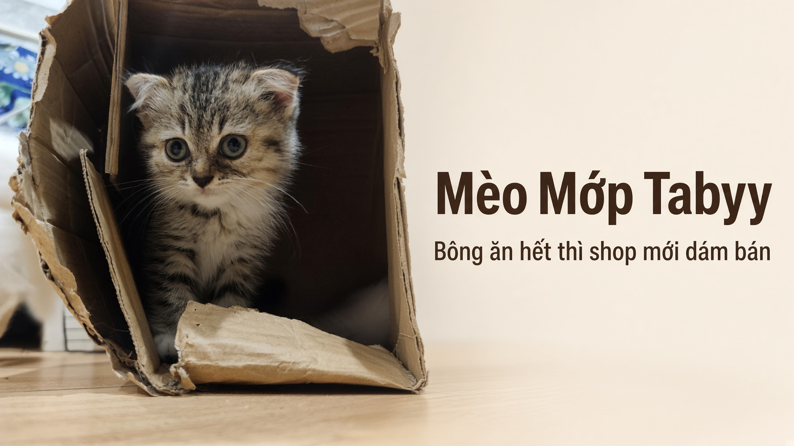

Viết bởi shop nhà nuôi 3 bé. Bông đang 2–3 tháng, chưa đầy 4 tháng. Cập nhật 8 tháng 10, 2026. Không thay lời bác sĩ thú y.
Link Shopee trong bài là link tiếp thị, shop có hoa hồng nếu bạn mua. Không phải cửa hàng chính hãng Mr.Vet.
Mèo 2–3 tháng ăn bao nhiêu gam, và khi sắp 4 tháng thì sao

Bài này là mức cho bé chưa đầy 4 tháng. Dạ dày nhỏ, đói nhanh, nên 3–4 bữa. Bông nhà tao đang ở nhóm này. Quanh 4–6 tháng nhiều bé xuống 3 bữa, nhưng vẫn ăn công thức kitten đến khoảng 12 tháng, không chuyển hạt adult.
Mèo chưa đầy 4 tháng ăn bao nhiêu gam
Bảng này tính khi pate là bữa chính. Phụ thuộc kcal trên bao, mỗi hãng khác nhau. Đối chiếu bảng trên bao trước khi đong.
| Cân bé | Pate một ngày | Chia bữa |
|---|---|---|
| 0,8–1 kg | 120–150 g | 3–4 bữa, mỗi bữa 35–45 g |
| 1–1,5 kg | 150–200 g | 4 bữa, mỗi bữa 40–50 g |
| 1,5–2 kg | 180–240 g | 3–4 bữa, mỗi bữa 50–60 g |
Có hạt thì trừ pate, không cộng đủ gam pate rồi cộng thêm hạt. 10 g hạt kitten khô thường tương đương khoảng 30–40 g pate. Lấy số kcal trên bao vì mỗi hãng khác. Không để hạt khô cả ngày nếu bé bỏ bữa ướt.
Vừa chạm 4 tháng
| Tuổi | Số bữa | Thức ăn |
|---|---|---|
| Dưới 4 tháng | 3–4 bữa | Pate là chính, hạt kitten nếu trộn |
| 4–6 tháng | Thường 3 bữa | Vẫn kitten, chưa adult |
| Khoảng 12 tháng | 2–3 bữa | Mới nghĩ chuyển công thức adult, đổi từ từ |
Giờ ăn mẫu
| Giờ | Cho ăn gì |
|---|---|
| 7 giờ | Pate |
| 12 giờ | Hạt kitten ít, và trừ pate buổi sau |
| 17 giờ | Pate, ít hơn nếu trưa đã có hạt |
| 21 giờ | Pate, bữa chính |
Sao biết đang cho đủ
Sờ xương sườn: thấy nhưng không sắc là vừa. Sờ thấy sắc, không có mỡ là gầy. Sờ không thấy sườn là béo. Cân mỗi tuần. Giai đoạn này nhiều bé tăng khoảng 50–100 g một tuần, tuỳ giống. Không tăng 2 tuần, hoặc tăng rất nhanh sau triệt sản, thì chỉnh phần ăn hoặc đi khám. Triệt sản xong nhu cầu calo giảm, giữ nguyên khẩu phần dễ béo.
Chưa có ảnh sườn vừa, gầy, béo và ảnh bát đã đong. Gửi tao 3 ảnh đó, tao gắn vào, không vẽ giả.
Dấu hiệu cần đi khám
Bỏ ăn hơn 12–24 giờ, nôn nhiều, tiêu chảy có máu, lờ đờ, lợi tái, sụt cân. Mèo con nhịn lâu dễ hạ đường huyết. Pate không phải thuốc.
Nước
Khoảng 50–60 ml mỗi kg một ngày, tính cả nước trong pate. Bát nước đặt cách khay cát, đổi mỗi ngày. Pate ướt giúp bé lấy thêm nước. Sữa bò không thay nước. Sữa kitten chỉ dùng khi bác sĩ chỉ định, không thay bữa pate.
Đồ cấm
Sữa bò, hành, tỏi, sôcôla, caffeine, cồn, xương nhỏ, vỏ và hạt nho, kẹo có xylitol. Cá sống và thịt sống vì vi khuẩn và ký sinh, không chỉ vì không tốt chung chung.
Đổi thức ăn 7–10 ngày
Ngày 1–2: 75% cũ, 25% mới. Ngày 3–4: nửa nửa. Ngày 5–7: 25% cũ, 75% mới. Ngày 8–10: thức mới nếu không đi ngoài lỏng. Bỏ ăn thì quay lại tỷ lệ hôm trước. Xem thêm đổi hạt 7 ngày.
Nên mua gì
Gói 70g: xem hạn dùng trên bao. Mở ra ăn trong ngày, phần thừa đậy kín để tủ lạnh, hôm sau cho nốt. Chi tiết ở pate để tủ lạnh bao lâu.
Mua pate 70g Mua lon 400g Mua hạt 1kg kitten
Câu hay hỏi
Mèo 2–3 tháng ăn bao nhiêu gam?
Bé khoảng 1 kg, pate là bữa chính, tham khảo 150–200 g một ngày, chia 4 bữa. Xem kcal trên bao.
Mèo 4 tháng còn bú sữa không?
Bình thường không còn bú mẹ. Chỉ dùng sữa kitten nếu bác sĩ chỉ định. Sữa không thay bữa pate.
Ăn cơm, cá, thịt người được không?
Không làm bữa chính. Cá sống và thịt sống có vi khuẩn và ký sinh.
Hạt ngâm bao lâu thì bỏ?
Ngâm 5–10 phút rồi cho ăn. Để ngoài quá 30–60 phút thì bỏ. Không ngâm từ sáng để tối.
Đọc thêm: pate hay hạt, tối không ăn.